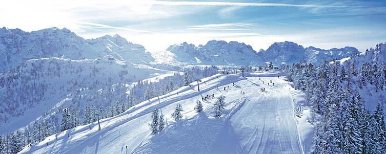

Madonna di Campiglio
Montagna
Madonna di Campiglio, adagiata in un'ampia conca tra le Dolomiti di Brenta Patrimonio Unesco e le alte cime dell'Adamello e della Presanella, è una delle destinazioni più famose e glamour delle Alpi.
In inverno
 Cuore della skiarea Campiglio Dolomiti di Brenta (150 km di piste collegate sci ai piedi), Madonna di Campiglio è il paradiso degli amanti della neve: sci alpino, snowboard, sci di fondo, sci alpinismo, escursioni con le racchette da neve permettono di vivere appieno la vacanza invernale.
In estate
 In estate, i sentieri per le passeggiate e le escursioni in alta quota, i tracciati per la mountain bike consentono di scoprire il meraviglioso
paesaggio che circonda il paese, senza dimenticare tutte le altre attività che si possono fare: dall'arrampicata alle vie ferrate,
dal golf al parapendio, dalla pesca al dog trekking.
In estate, i sentieri per le passeggiate e le escursioni in alta quota, i tracciati per la mountain bike consentono di scoprire il meraviglioso
paesaggio che circonda il paese, senza dimenticare tutte le altre attività che si possono fare: dall'arrampicata alle vie ferrate,
dal golf al parapendio, dalla pesca al dog trekking.
Aprés ski e vita notturna
 Una giornata splendida si deve concludere in bellezza e nel pieno divertimento, e allora c'è solo l'imbarazzo della scelta tra gli
innumerevoli bar e aprés ski, in paese o sulle piste, che potete trovare a Madonna di Campiglio, Pinzolo e in tutta la Val Rendena.
Madonna di Campiglio e Pinzolo offrono atmosfera raffinata e stile trendy armoniosamente coniugato con lo spirito della montagna.
Dopo un'ottima cena nei tanti rifugi in quota o nei ristoranti più in voga delle località, il divertimento prosegue nei club e discoteche
che la regina delle Dolomiti offre in grande stile.
Il Des Alpes Mood Club, la Zangola, il Cliffangher Club, la Cantina del Suisse sono i luoghi di ritrovo più acclamati della notte di
Madonna di Campiglio. Il tutto per concludere al meglio una giornata nel fascino delle grandi occasioni e del divertimento più mondano.
Una giornata splendida si deve concludere in bellezza e nel pieno divertimento, e allora c'è solo l'imbarazzo della scelta tra gli
innumerevoli bar e aprés ski, in paese o sulle piste, che potete trovare a Madonna di Campiglio, Pinzolo e in tutta la Val Rendena.
Madonna di Campiglio e Pinzolo offrono atmosfera raffinata e stile trendy armoniosamente coniugato con lo spirito della montagna.
Dopo un'ottima cena nei tanti rifugi in quota o nei ristoranti più in voga delle località, il divertimento prosegue nei club e discoteche
che la regina delle Dolomiti offre in grande stile.
Il Des Alpes Mood Club, la Zangola, il Cliffangher Club, la Cantina del Suisse sono i luoghi di ritrovo più acclamati della notte di
Madonna di Campiglio. Il tutto per concludere al meglio una giornata nel fascino delle grandi occasioni e del divertimento più mondano.